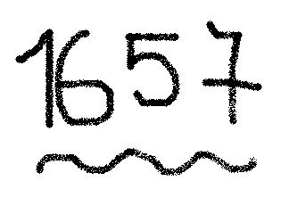

1657
 De: La Frikipedia, la enciclopedia extremadamente seria.
De: La Frikipedia, la enciclopedia extremadamente seria.
En este año decisivo para la humanidad pasaron muchas cosas (pero muchas, muchas) que se podrán ver a continuación:
Nacimientos.
- Nace Bernard Fontelle, inventor del agua mineral.
- Posible nacimiento del Gordo de Michelín.
Muertes.
- Muere Fernando III de Hamsburguesa.
Arte.
- Todavía no hay cine.
- Bueno, quizás un poquito.
Deporte.
- Hubo partidos de furbo.
- España ganó un partido contra sí misma.
- En la actual Hungría (que estaba bajo dominio turco) los cristianos y musulmanes jugaron a una cosa muy divertida que es tirarse tejas a la cabeza.
- Un tío intenta doparse con cafeína.
- Posible existencia del Polimono.
Literatura.
- El rey baltasar escribió el final de El Criticón.
- Un músico ruso escribe partituras.
- Una española aprendió a leer, pero no a escribir.
Geografía.
- Algunos europeos se plantan la posibilidad de que Cipango y Catai se llamen en realidad China y Japón.
- Una paloma se caga justo en el centro exacto de Londres, lo cual casi causa el Apocalipsis.
Sucesos históricos.
- Se intentó construir en Nueva York la Torre sin Gemela, pero se derrumbó cuando sólo tenía 5 ladrillos porque un perro le orinó encima.
- Se quemó un cacho de la ciudad de Edo, que más tarde se llamaría Tokio.
- El rey de España intentó construir una torre gigante para pasar sobre los Prineos e invadir el Inframundo (en la superficie) y ponerle el nombre de Francia, país del Infierno, pero falló.
- Inframundo intenta volver a llamarse Francia y viceversa, pero no se consigue por motivos desconocidos.
- Alemania se prepara para ganar la futura I Guerra Mundial.
- El gobernador español de Cuba visita al de Méjico.
Naturaleza.
- Los koalas intentaron evitar la colonización británica, pero se cansaron. Aún así, mucha gente cree que invadieron el mundo.
- Un inglés llamado Wiliam no sé qué le copió la teoría de que la sangre circula a Miguel Servet, que murió por culpa de la Inquisición mucho antes. Pero no tiene esto importancia, ya que la sangre no cir-culo, en realidad sangra (inútiles).
- Se permite fumar en los restaurantes, pero no restaurar en los fumaderos.
- Un cuello y se ahogó.
- Posible aparición de S.I.D.A. según un mendigo borracho.
- Parece ser que un equidna sufrió la transformación en Chupacabras arrasó a los rebaños ingleses de ovejas.
Ufología.
Frikología.
- Un astrónomo holandés inventó el reloj de péndulo, suponemos que para hipnotizar a la gente.
Estos hechos marcaron sucesos extraordinarios que pasarían en el futuro.
Autor(es):
- Krusher
- Doctor grijander
- Federicoa
- Frikiman
- Grifada
- Idrox
- Ninito159
- Cibercrank
- Mel-o
- Ploter
Frikipedia 2005-2016, Licencia
GFDL 1.2 - Extraído por FrikiLeaks